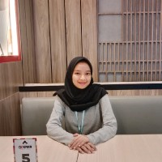

Halo, Saya
Mariya Ulfa D.S.
Guru PAUD berdedikasi di TK Al Hikmah, Peneliti Pendidikan, & Wirausahawan di balik Shafa Store. Menggabungkan ilmu pedagogik dan kreativitas untuk menciptakan pengalaman yang bermakna.

Alumni
PGPAUD UPI
Owner
Shafa Store
Tentang Saya
Mengenal Lebih Dekat
Pendidikan, Penelitian, & Kreativitas Menjadi Satu
Saya adalah Mariya Ulfa Dwi Shafarani, lulusan Pendidikan Guru Pendidikan Anak Usia Dini (PGPAUD) dari Universitas Pendidikan Indonesia (UPI) Kampus Purwakarta. Latar belakang akademik saya tidak hanya fokus pada praktik mengajar, tetapi juga pada riset dan publikasi ilmiah terkait perkembangan anak.
Saat ini, dedikasi saya terbagi menjadi dua dunia yang saling melengkapi: membimbing generasi masa depan sebagai Guru PAUD di TK Al Hikmah, dan mengasah jiwa wirausaha sebagai Owner Shafa Store. Keberagaman peran ini menuntut kepekaan komunikasi, analisis kebutuhan, dan dedikasi yang tinggi.
Perjalanan Karir
Pengalaman Latar Belakang
Guru PAUD
TK Al Hikmah
Merancang rencana pembelajaran harian (RPPH), mengelola interaksi kelas, dan menciptakan media pembelajaran kreatif guna memfasilitasi perkembangan kognitif, motorik, dan karakter anak usia dini.
Owner & Pengelola
Shafa Store
Mengelola operasional bisnis, mendesain materi promosi visual, menganalisis kebutuhan pelanggan, dan memastikan kepuasan pembeli dalam setiap transaksi online maupun offline.
S1 Pendidikan Guru PAUD
UPI Kampus Purwakarta
Mempelajari psikologi anak, desain media pembelajaran edukatif, dan metode penelitian kualitatif maupun kuantitatif yang berujung pada publikasi jurnal ilmiah nasional.
Riset & Karya Ilmiah
Publikasi Jurnal
Beberapa publikasi penelitian yang telah saya teliti dan terbitkan di berbagai jurnal akademik nasional.
Penanaman Nilai Karakter Gemar Membaca melalui Media Buku Cerita Bergambar pada Anak Usia Dini
Jurnal: Murhum : Jurnal Pendidikan Anak Usia Dini (Vol 5 No 2)
Penulis: Mariya Ulfa Dwi Shafarani, Asep Kurnia Jayadinata, Idat Muqodas
Lihat JurnalDampak Fatherless Terhadap Perkembangan Anak Usia Dini
Jurnal: Ceria: Jurnal Program Studi Pendidikan Anak Usia Dini (Vol 12 No 1)
Penulis: Hayani Wulandari, Mariya Ulfa Dwi Shafarani
Lihat JurnalAroma Suap Menyuap Pemilu 2024 Menguat, Bagaimana Hukum Dalam Islam?
Jurnal: Tabsyir: Jurnal Dakwah dan Sosial Humaniora (Vol 4 No 3)
Penulis: Hisny Fajrusalam, Kurniasih, Mariya Ulfa D.S., dkk.
Lihat JurnalKarya Kreatif
Galeri Portofolio
Dokumentasi kegiatan edukasi dan pengembangan visual bisnis.
Mari Terhubung
Punya Pertanyaan atau Ide?
Saya sangat terbuka untuk berdiskusi seputar dunia pendidikan anak usia dini, peluang kolaborasi riset, atau urusan bisnis. Jangan ragu untuk menghubungi saya!
Lokasi
Purwakarta, Jawa Barat